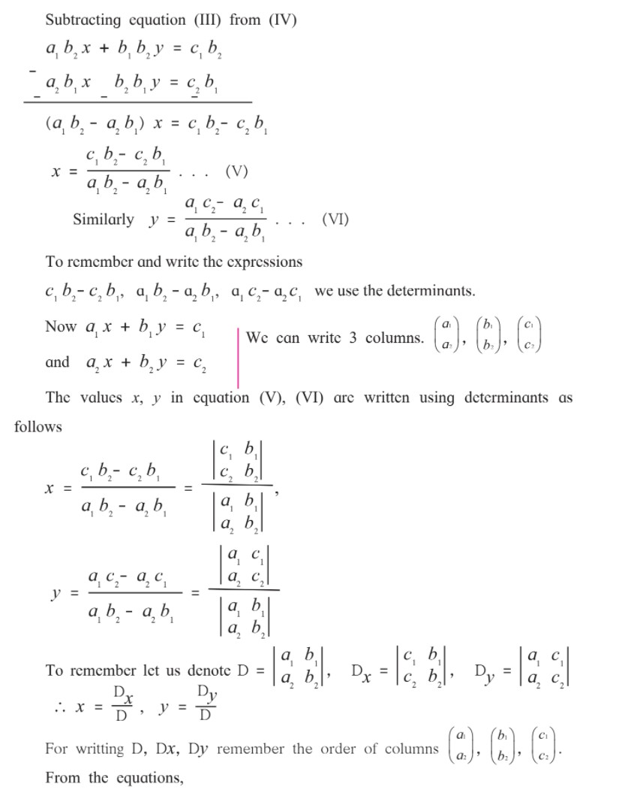
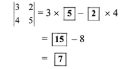
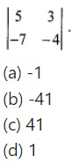

1. Linear Equations in Two Variables
Let's study.
Let's learn.
Linear equation in two variables
An equation which contains two variables and the degree of each term containing variable is one, is called a linear equation in two variables.
ax + by + c = 0 is the general form of a linear equation in two variables; a, b, c are real numbers and a, b are not equal to zero at the same time. Ex. 3x - 4y + 12 = 0 is the general form of equation 3x = 4y - 12
Activity : Complete the following table
Simultaneous linear equations
When we think about two linear equations in two variables at the same time, they are called simultaneous equations.
Last year we learnt to solve simultaneous equations by eliminating one variable. Let us revise it.
Ex. (1) Solve the following simultaneous equations.
(1) 5x - 3y = 8; 3x + y = 2
Ex. (2) Solve : 3x + 2y = 29; 5x - y = 18
Solution : 3x + 2y = 29. . . (I) and 5x - y = 18 . . . (II)
Let’s solve the equations by eliminating ’y’. Fill suitably the boxes below. Multiplying equation (II) by 2.
Ex. (3) Solve : 15x + 17y = 21; 17x + 15y = 11
Solution : 15x + 17y = 21. . . (I)
17x + 15y = 11 . . . (II)
In the two equations above, the coefficients of x and y are interchanged. While solving such equations we get two simple equations by adding and subtracting the given equations. After solving these equations, we can easily find the solution.
Let’s add the two given equations.
Dividing both sides of the equation by 32.
x + y = 1 . . . (III)
Now, let’s subtract equation (II) from (I)
dividing the equation by 2.
-x + y = 5 . . . (IV)
Now let’s add equations (III) and (V).
Place this value in equation (III).
x + y = 1
x + 3 = 1
x = 1 - 3
x = -2
(x, y) = (-2, 3) is the solution.
PRACTICE SET 1.1
Q.1 Complete the following activity to solve the simultaneous equations.
5x + 3y = 9 -----(I)
2x + 3y = 12 ----- (II)
Solution:
5x + 3y = 9 …(i)
2x-3y=12 …(ii)
Add equations (i) and (ii)
Q2. Solve the following simultaneous equations.
i. 3a + 5b = 26; a + 5b = 22
Solution:
3a + 5b = 26 …(i)
a + 5b = 22 …(ii)
Subtracting equation (ii) from (i), we get

Substituting a = 2 in equation (ii), we get
iii. 2x – 3y = 9; 2x + y = 13
Solution:
2x – 3y = 9 …(i)
2x + y = 13 …(ii)
v. 5x + 2y = -3;x + 5y = 4
Solution:
5x + 2y = -3 …(i)
vii. 99x + 101y = 499 ; 101x + 99y = 501
Solution:
99x + 101 y = 499 …(i))
ii. x + 7y = 10; 3x – 2y = 7
Solution:
iv. 5m – 3n = 19; m – 6n = -7
Solution:
5m – 3n = 19 …(i)
viii. 49x – 57y = 172; 57x – 49y = 252
Solution:
49x – 57y = 172 …(i)
------------------------------------------------------------ ------------------------------------------------------------ -------------------------------------------------
Let's recall.
Graph of a linear equation in two variables
In the 9th standard we learnt that the graph of a linear equation in two variables is a straight line. The ordered pair which satisfies the equation is a solution of that equation. The ordered pair represents a point on that line.
Ex. Draw graph of 2x - y = 4.
Solution : To draw a graph of the equation let’s write 4 ordered pairs.
To obtain ordered pair by simple way let’s take x = 0 and then y = 0.
Steps to follow for drawing a graph of linear equation in two variables.
Steps:
A linear equation y = 2 is also written as 0x + y = 2. The graph of this line is parallel to X- axis; as for any value of x, y is always 2.
Similarly equation x = 2 is written as x + 0y = 2 and its graph is parallel to Y-axis.
Let's learn.
Graphical method
Ex. Let’s draw graphs of x + y = 4, 2x - y = 2 and observe them.
Each point on the graph satisfies the equation. The two lines intersect each other at (2, 2).
Hence ordered pair (2, 2) i.e. x = 2, y = 2 satisfies the equations x + y = 4 and 2x - y = 2.
The values of variables that satisfy the given equations, give the solution of given equations.
therefor the solution of given equations x + y = 4, 2x - y = 2 is x = 2, y = 2.
Let’s solve these equations by method of elimination.
x + y = 4 . . . (I)
2x - y = 2 . . . (II)
Adding equations (I) and (II) we get,
3x = 6 \ x = 2
substituting this value in equation (I)
x + y = 4
=> 2 + y = 4
=> y = 2
Activity (1) : Solve the following simultaneous equations by graphical method. Complete the following tables to get ordered pairs.
i. Plot the above ordered pairs on the same co-ordinate plane.
ii. Draw graphs of the equations.
iii. Note the co-ordinates of the point of intersection of the two graphs. Write solution of these
Solution:
PRACTICE SET 1.2
Q1. Complete the following table to draw graph of the equations -
i. x + y = 3
Solution:
Q2. Solve the following simultaneous equations graphically.
i. x + y = 6 ; x – y = 4
The two lines intersect at point (5, 1).
∴ x = 5 and y = 1 is the solution of the simultaneous equations x + y = 6 and x – y = 4.
ii. x + y = 5 ; x – y = 3
The two lines intersect at point (4, 1).
∴ x = 4 and y = 1 is the solution of the simultaneous equations x+y = 5 and x – y = 3.
iii. x + y = 0 ; 2x – y = 9
The two lines intersect at point (3, -3).
∴ x = 3 and y = -3 is the solution of the simultaneous equations x + y = 0 and 2x – y = 9.
iv. 3x – y = 2 ; 2x – y = 3
The two lines intersect at point (-1, -5).
∴ x = -1 and y = -5 is the solution of the simultaneous equations 3x- y = 2 and 2x- y = 3.
v. 3x – 4y = -7 ; 5x – 2y = 0
The two lines intersect at point (1, 2.5).
∴ x = 1 and y = 2.5 is the solution of the simultaneous equations 3x – 4y = -7 and 5x – 2y = 0.
vi. 2x – 3y = 4 ; 3y – x = 4
The two lines intersect at point (8, 4).
∴ x = 8 and y = 4 is the solution of the simultaneous equations 2x – 3y = 4 and 3y – x = 4.
------------------------------------------------------------ ------------------------------------------------------------ -------------------------------------------------
Let's discuss.
To solve simultaneous equations x + 2y = 4 ; 3x + 6y = 12 graphically, following are the ordered pairs.
Plotting the above ordered pairs, graph is drawn. Observe it and find answers of the following questions.
Now let us consider another example.
Draw graphs of x - 2y = 4, 2x - 4y = 12 on the same co-ordinate plane. Observe it. Think of the realation between the coefficients of x, coefficients of y and the constant terms and draw the inference.
Let's learn.
Determinant
Solved Example:-
Let's learn.
Determinant method (Cramer’s Rule)
Using determinants, simultaneous equaions can be solved easily and in less space. This method is known as determinant method. This method was first given by a Swiss mathematician Gabriel Cramer, so it is also known as Cram- er’s method.
Solved Example:-
Ex. (1) Solve the following simultaneous equations using Cramer’s Rule. 5x + 3y = -11 ; 2x + 4y = -10
Solution : Given equations
Activity 1 : To solve the simultaneous equations by determinant method, fill in the blanks
y + 2x - 19 = 0 ; 2x - 3y + 3 = 0
Solution : Write the given equations in the form ax + by = c
2x + y = 19
2x - 3y = -3
Activity 2 : Complete the following activity -
PRACTICE SET 1.3
Q1. Fill in the blanks with correct number
Solution:-
Q2. Find the values of following determinants.

Q3. Solve the following simultaneous equations using Cramer’s rule.
i. 3x – 4y = 10 ; 4x + 3y = 5
Solution:-
The given simultaneous equations are 3x – 4y = 10 …(i)
ii. 4x + 3y – 4 = 0 ; 6x = 8 – 5y
Solution:-
iii. x + 2y = -1 ; 2x – 3y = 12
Solution:-
iv. 6x – 4y = -12 ; 8x – 3y = -2
Solution:-
v. 4m + 6n = 54 ; 3m + 2n = 28
Solution:-
Solution:-
------------------------------------------------------------ ------------------------------------------------------------ -------------------------------------------------
Let's learn.
Equations reducible to a pair of linear equations in two variables
Activity : Complete the following table.
Solution:-
Let's think.
In the above table the equations are not linear. Can you convert the equations into linear equations ?
Let's remember!
We can create new variables making a proper change in the given variables. Substituting the new variables in the given non-linear equations, we can convert them in linear equations.
Also remember that the denominator of any fraction of the form m/n cannot be zero.
Solved Example:-
Let's think.
In the above examples the simultaneous equations obtained by
transformation are solved by elimination method.
If you solve these equations by graphical method and by Cramer’s
rule will you get the same answers ? Solve and check it.
Activity : To solve given equations fill the boxes below suitably.
PRACTICE SET 1.4
Q1. Solve the following simultaneous equations.
Solution:-
Solution:-
Substituting x = 3 in equation (vi), we get
3 + y = 5
∴ y = 5 – 3 = 2
∴ (x, y) = (3, 2) is the solution of the given simultaneous equations.
Solution:-
Solution:-
------------------------------------------------------------ ------------------------------------------------------------ -------------------------------------------------
Let's learn.
Application of Simultaneous equations
Activity : There are some instructions given below. Frame the equations from the information and write them in the blank boxes shown by arrows.
Solution:-
Ex. (1) The perimeter of a rectangle is 40 cm. The length of the rectangle is more than double its breadth by 2. Find length and breadth.
Solution : Let length of rectangle be x cm and breadth be y cm.
y = 10
Total amount distributed is = xy = 40 ́10 = 400.
400 distributed equally among 40 students.
Ex. (5) A three digit number is equal to 17 times the sum of its digits; If the digits are reversed, the new number is 198 more than the old number ; also the sum of extreme digits is less than the middle digit by unity. Find the original number.
Solution : Let the digit in hundreds place be x and that in unit place be y.
PRACTICE SET 1.5
Q1. Two numbers differ by 3. The sum of twice the smaller number and thrice the greater number is 19. Find the numbers.
Solution:-
Let the greater number be x and the smaller number be y.
According to the first condition, x – y = 3 …(i)
According to the second condition,
3x + 2y = 19 …(ii)
Multiplying equation (i) by 2, we get
2x – 2y = 6 …(iii)
Adding equations (ii) and (iii), we get
Substituting x = 5 in equation (i), we get
5 – y = 3
∴ 5 – 3 = y
∴ y = 2
∴ The required numbers are 5 and 2.F
Q2. Complete the following.
Solution:-
Opposite sides of a rectangle are equal.
∴ 2x + y + 8 = 4x – y
∴ 8 = 4x – 2x – y – y
∴ 2x – 2y = 8
∴ x – y = 4 …(i)[Dividingboth sides by 2]
Also, x + 4= 2y
∴ x – 2y = -4 …(ii)
Subtracting equation (ii) from (i), we get
Substituting y = 8 in equation (i), we get
x – 8 = 4
∴ x = 4 + 8
∴ x = 12
Now, length of rectangle = 4x – y
= 4(12) – 8
= 48 – 8
∴ Length of rectangle = 40
Breadth of rectangle = 2y = 2(8) = 16
Perimeter of rectangle = 2(length + breadth)
= 2(40 + 16)
= 2(56)
∴ Perimeter of rectangle =112 units
Area of rectangle = length × breadth
= 40 × 16
∴ Area of rectangle = 640 sq. units
∴ x = 12 and y = 8, Perimeter of rectangle is 112 units and area of rectangle is 640 sq. units.
Q3. The sum of father’s age and twice the age of his son is 70. If we double the age of the father and add it to the age of his son the sum is 95. Find their present ages.
Solution:-
Let the present ages of father and son be x years and y years respectively.
According to the first condition,
x + 2y = 70 …(i)
According to the second condition,
2x + y = 95 …(ii)
Multiplying equation (i) by 2, we get
2x + 4y = 140 …(iii)
Subtracting equation (ii) from (iii), we get
Substituting y = 15 in equation (i), we get
x + 2(15) = 7O
⇒ x + 30 = 70
⇒ x = 70 – 30
∴ x = 40
∴ The present ages of father and son are 40 years and 15 years respectively.
Q4. The denominator of a fraction is 4 more than twice its numerator. Denominator becomes 12 times the numerator, if both the numerator and the denominator are reduced by 6. Find the fraction.
Solution:-
Q5. Two types of boxes A, B are to be placed in a truck having capacity of 10 tons. When 150 boxes of type A and 100 boxes of type B are loaded in the truck, it weighes 10 tons. But when 260 boxes of type A are loaded in the truck, it can still accommodate 40 boxes of type B, so that it is fully loaded. Find the weight of each type of box.
Solution:-
Q6. Out of 1900 km, Vishal travelled some distance by bus and some by aeroplane. Bus travels with average speed 60 km/hr and the average speed of aeroplane is 700 km/hr. It takes 5 hours to complete the journey. Find the distance, Vishal travelled by bus.
Solution:-
PROBLEM SET - 1
Q1. Choose correct alternative for each of the following questions
i. To draw graph of 4x + 5y = 19, find y when x = 1.
(a) 4
(b) 3
(c) 2
(d) -3
Answer : b
ii. For simultaneous equations in variables x and y, Dx = 49, Dy = – 63, D = 7 then what is x?

Answer : a
iii. Find the value of
Answer : d
iv. To solvex + y = 3; 3x – 2y – 4 = 0 by determinant method find D.
(a) 5
(b) 1
(c) -5
(d) -1
Answer : c
v. ax + by = c and mx + n y = d and an ≠ bm then these simultaneous equations have-
(a) Only one common solution
(b) No solution
(c) Infinite number of solutions
(d) Only two solutions.
Answer : a
Q2. Complete the following table to draw the graph of 2x - 6y = 3
Solution:-
Q3. Solve the following simultaneous equations graphically.
(1) 2x + 3y = 12 ; x - y = 1
Solution:-
The two lines interest at point (3,2).
∴ x = 3 and y = 2 is the solution of the simultaneous equations 2x + 3y = 12 and x – y = 1.
(2) x - 3y = 1 ; 3x - 2y + 4 = 0
Solution:-
The two lines intersect at point (-2, -1).
∴ x = -2 and y = -1 is the solution of the simultaneous equations x – 3y = 1 and 3x – 2p + 4 = 0.
(3) 5x - 6y + 30 = 0 ; 5x + 4y - 20 = 0
Solution:-
The two lines intersect at point (0, 5).
∴ x = 0 and y = 5 is the solution of the simultaneous equations 5x – 6y + 30 = 0 and 5x + 4y – 20 = 0.
(4) 3x - y - 2 = 0 ; 2x + y = 8
Solution:-
The two lines intersect at point (2, 4).
∴ x = 2 and y = 4 is the solution of the simultaneous equations 3x – y – 2 = 0 and 2x + y = 8.
(5) 3x + y = 10 ; x - y = 2
Solution:-
The two lines intersect at point (3, 1).
∴ x = 3 and y = 1 is the solution of the simultaneous equations 3x + y = 10 and x – y = 2
Q4. Find the values of each of the following determinants.
Q5. Solve the following equations by Cramer’s method.
(1) 6x - 3y = -10 ; 3x + 5y - 8 = 0
Solution:-
6x – 3y = -10 …(i)
3x + 5y – 8 = 0
∴ 3x + 5y = 8 …(ii)
Equations (i) and (ii) are in ax + by = c form. Comparing the given equations with a1x + b1y = c1 and a2x +
b2y = c2, we get
a1 = 6, b1 = -3, c1 = 10 and
a2 = 3, b2 = 5, c2 = 8
(2) 4m - 2n = -4 ; 4m + 3n = 16
Solution:-
4m – 2n = -4 …(i)
4m + 3n = 16 …(ii)
Equations (i) and (ii) are in am + bn = c form.
Comparing the given equations with a1m + b1n = c1 and a2m + b2n = c2, we get
a1 = 4, b1 = -2, c1 = -4 and
a2 = 4, b2 = 3, c2 = 16

Solution:-
(4) 7x + 3y = 15 ; 12y - 5x = 39
Solution:-
7x + 3y = 15 …(i)
12y – 5x = 39
i.e. -5x + 12y = 39 …(ii)
Equations (i) and (ii) are in ax + by = c form.
Comparing the given equations with
a1x + b1y = c1 and a2x + b2y = c2, we get
a1 = 7, b1 = 3, c1 = 15 and
a2 = -5, b2 = 12, c2 = 39
Solution:-
Q6. Solve the following simultaneous equations.
Solution:-
Solution:-
Solution:-
Solution
Solution:-
Q7. Solve the following word problems.
(1) A two digit number and the number with digits interchanged add up to 143. In the given number the digit in unit’s place is 3 more than the digit in the ten’s place. Find the original number.
Solution:-
Let the digit in unit’s place be x
and that in the ten’s place be y.
(2) Kantabai bought 1 1/2 kg tea and 5kg sugar from a shop. She paid ₹ 50 as return fare for rickshaw. Total expense was ₹700. Then she realised that by ordering online the goods can be bought with free home delivery at the same price. So, next month she placed the order online for 2kg tea and 7kg sugar. She paid ₹880 for that. Find the rate of sugar and tea per kg.
Solution:-
(3) To find number of notes that Anushka had, complete the following activity.
Solution:-
(4) Sum of the present ages of Manish and Savita is 31. Manish’s age 3 years ago was 4 times the age of Savita. Find their present ages.
Solution:-
Let the present ages of Manish and Savita be x years and y years respectively.
According to the first condition,
x + y = 31 …(i)
3 years ago,
Manish’s age = (x – 3) years
Savita’s age = (y – 3) years
According to the second condition,
(x – 3) = 4 (y – 3)
∴ x – 3 = 4y – 12
∴ x – 4y = -12 + 3
∴ x – 4y = -9 …(ii)
Subtracting equation (ii) from (i), we get
(5) In a factory the ratio of salary of skilled and unskilled workers is 5 : 3. Total salary of one day of both of them is ` 720. Find daily wages of skilled and unskilled workers.
Solution:-
(6) Places A and B are 30 km apart and they are on a straight road. Hamid travels from A to B on bike. At the same time Joseph starts from B on bike, travels towards A. They meet each other after 20 minutes. If Joseph would have started from B at the same time but in the opposite direction (instead of towards A) Hamid would have caught him after 3 hours. Find the speed of Hamid and Joseph.